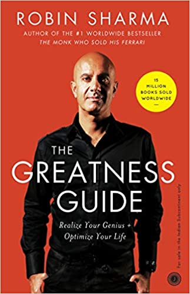
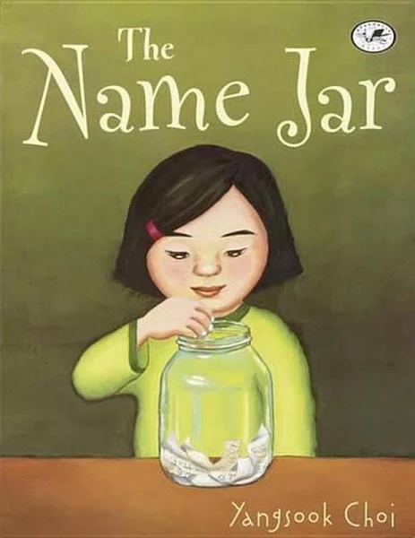

The Greatness Guide

Robin Sharma
The Greatness Guide is a strikingly powerful and enormously practical handbook that will inspire you to get to world-class in both your personal and professional life.Ones have been embraced by celebrity CEOs, rock stars and royalty, this book contains a proven formula that will help you meet your highest potential and live an extraordinary life.
Harry Potter
J K Rowling
Escape to Hogwarts with the unmissable series that has sparked a lifelong reading journey for children and families all over the world.
Harry Potter has never even heard of Hogwarts when the letters start dropping on the doormat at number four, Privet Drive. Addressed in green ink on parchment with a seal
The Wings of Fire
Dr.A.P.J.Abdul Kalam
Wings of Fire: An Autobiography of APJ Abdul Kalam (1999), former President of India.
Dr. Kalam examines his early life, effort, hardship, fortitude,led him to lead Indian space research, nuclear and missile programs.
Hindustan Aeronautics Limited and was assigned to build a hovercraft prototype.
You Can Win
Shiv kera
An easy-to-read, practical, common-sense guide that will take you from ancient wisdom to modern-day thinking, You Can Win helps you establish new goals, develop a new sense of purpose, and generate new ideas about yourself and your future. It guarantees, as the title suggests, a lifetime of success.
IKIGAI
Hector Garcia
We all have an ikigai.
It's the Japanese word for ‘a reason to live’ or ‘a reason to jump out of bed in the morning’.
This book will help you work out what your own ikigai really is, and equip you to change your life. You have a purpose in this world: your skills, your interests, your desires and your history have made you the perfect candidate for something. All you have to do is find it.
The Name Jar

Yangsook Choi
A heartwarming story about the new girl in school
Having just moved from Korea, Unhei is anxious about fitting in.She decides to choose an American name from a glass jar. But while Unhei thinks of being a Suzy, Laura, or Amanda, nothing feels right. With the help of a new friend, Unhei will learn that the best name is her own.
The Name of the Rose
Umberto Eco
Set in 1327 during the Middle Ages, The Name Of The Rose (Vintage Classics) is a timeless classic that opens a mystery. His mission is blurred by a series of seven mysterious deaths that follow the pattern described in the book of Revelation. He comes face to face with the abbey’s labyrinthine secrets.
The Alchemist
Paulo Choelo
Paulo Coelho's enchanting novel has inspired a devoted following around the world. This story, dazzling in its powerful simplicity and inspiring wisdom, is about an Andalusian shepherd boy named Santiago who travels from his homeland in Spain to the Egyptian desert in search of a treasure buried in the Pyramids. Along the way he meets a Gypsy woman, a man who calls himself


.webp)